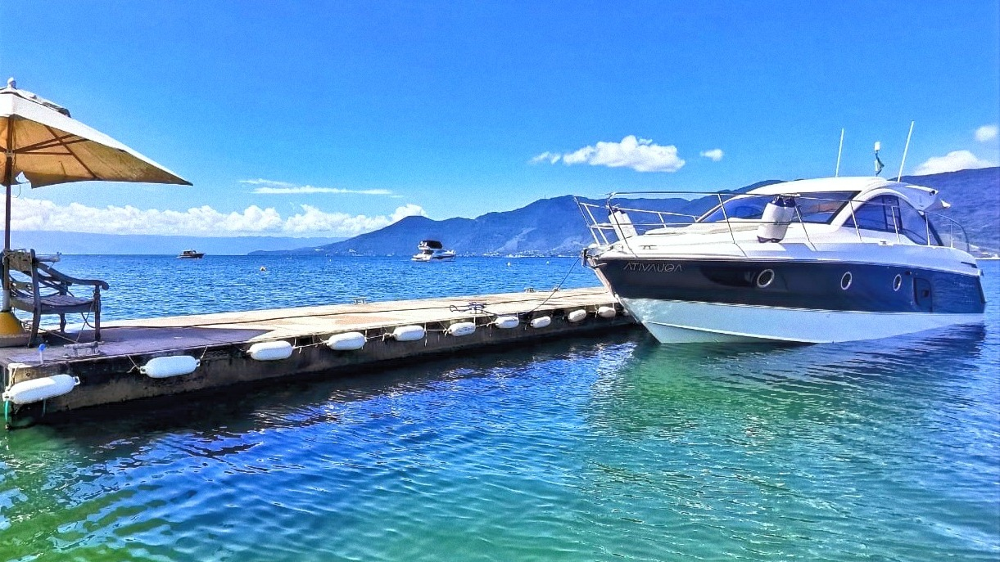
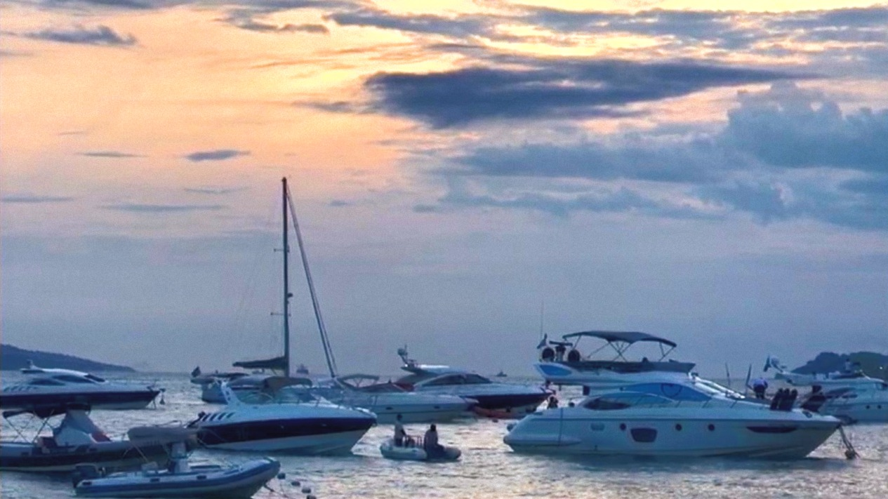
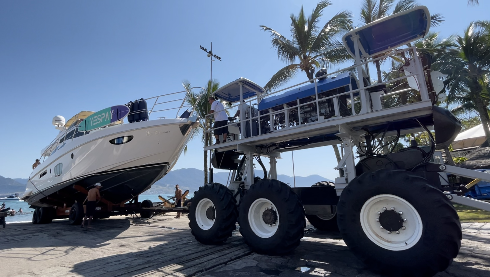
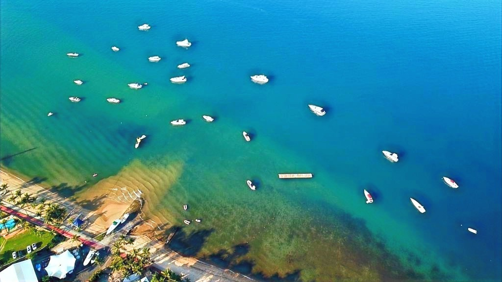
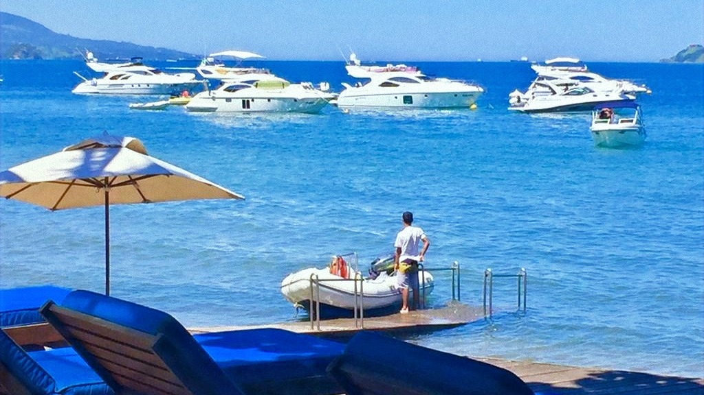
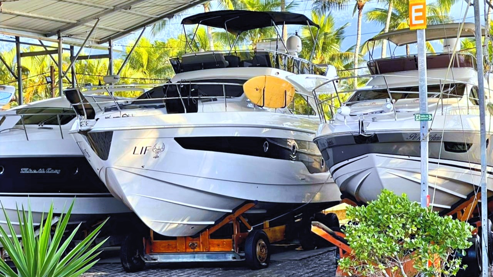
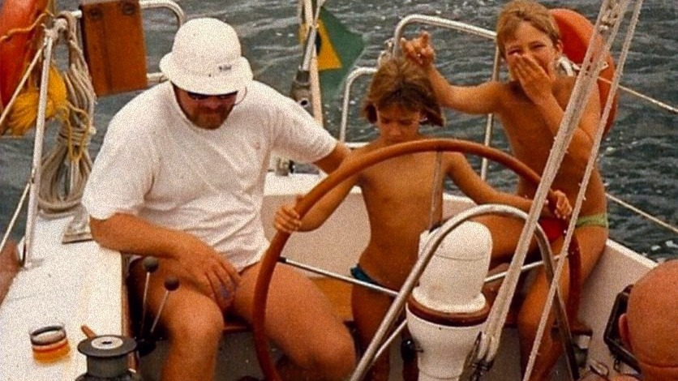
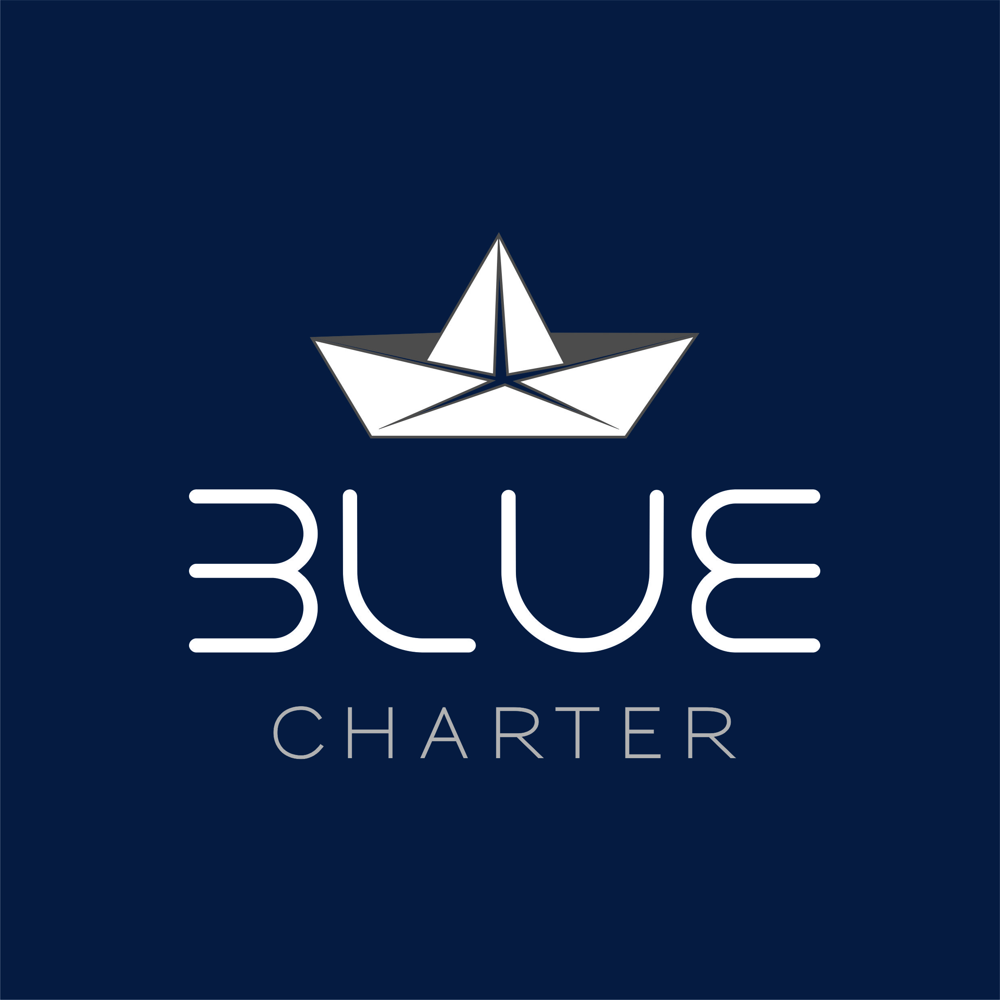

MAIS
Porto Ilhabela. 40 anos à frente.

Engenharia e Mar
Fundada em 1985 por Gunnar Möller, engenheiro nuclear criador dos rebocadores hidráulicos Seahorse e Rino, a Marina Porto Ilhabela une tecnologia própria independente de marés e tradição marítima familiar para embarcações de até 65 pés.
Saiba mais
Temporada Ilhabela
Embarque 24h
Vagas molhadas e poitas inspecionadas por mergulhadores, apoio de boteiros em tempo integral e sala rádio Delta 38 operando todos os dias do ano.
Explorar vagas

Operação em foco
Com os rebocadores hidráulicos Seahorse e Rino, sua lancha ou veleiro de até 65 pés entra na água quando você decidir, sem restrição de maré. Agendamento direto via WhatsApp, flutuante com água doce, pátio assegurado e acesso ao restaurante panorâmico com deck sobre o mar.
Agendar descidaEstrutura e Serviços
Selecione uma modalidade operacional para consultar especificações e reservar.

Família Möller e o Mar
Desde 1985, Gunnar e Virginia Möller construíram a marina mais antiga de Ilhabela com mentalidade de engenharia e hospitalidade. Hoje o legado segue com Marcos Möller, velejador com volta ao mundo a bordo que lidera a operação, ao lado de Andrea Möller, recordista mundial de ondas grandes.
Visitar a sede
Ecossistema Marina Porto

Blue Charter
Locação de embarcações selecionadas com serviço de bordo, catering personalizado e chef embarcado pelo litoral norte.
Marina Porto Yachts
Assessoria náutica e intermediação técnica com o respaldo de quem conhece o histórico de manutenção de cada casco.
Marina Porto Eventos
Restaurante panorâmico e espaço à beira-mar com deck privativo para recepções, encontros náuticos e celebrações.
Paddle Club Ilhabela
Clube de remo e esportes a remo integrado à sede, com acesso direto ao canal protegido de Itaquanduba.
Dúvidas operacionais
Informações práticas para mensalistas, comandantes em trânsito e proprietários de Jet Ski.
Falar com a secretariaO agendamento é feito diretamente pelo canal exclusivo de WhatsApp (+55 12 99634-2782) ou pela Sala Rádio VHF Delta 38. Os rebocadores hidráulicos Seahorse e Rino operam independentemente da altura da maré.
Oferecemos contratação mensal ou pernoite avulsa. Todas as poitas passam por inspeção subaquática periódica com mergulhadores, e os boteiros realizam traslados 24h por dia, todos os dias do ano.
Para maior comodidade na travessia, contamos com serviço de manobristas e estacionamento de apoio em São Sebastião, além de transfer interno na sede de Ilhabela até sua embarcação.
Sim. Ao contratar a diária de Jet Ski, você conta com logística de reboque, limpeza e adoçamento pós-uso, barco resgate de apoio e acesso às áreas sociais de mensalistas (piscina, vestiários e restaurante).